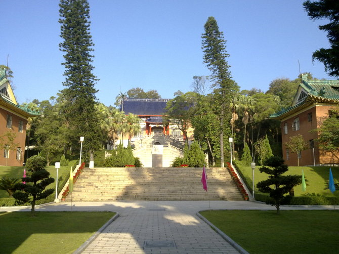
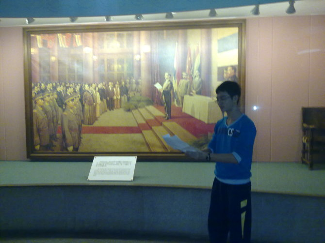
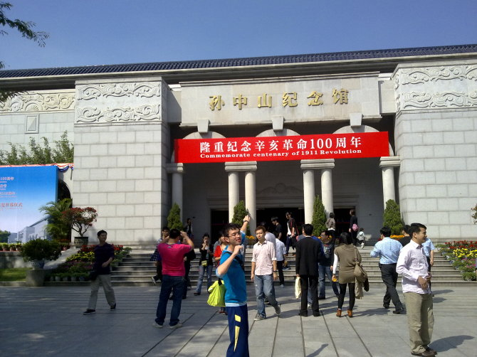

高校情報学リーグ試験記 | オリジナル、AI翻訳
広州蘿崗から出発し、中山南朗鎮へ向かいました。当初は、国語と数学の試験を受けるほど時間がかかると思っていましたが、国語は省かれ、わずか2時間で到着しました。南朗鎮は、記念中学の学生たちの朗々とした読書声とその名声以外には、あまり知られていない場所です。記念中学の学生たちはよく歩いて孫中山故居に行き、カップルはそこで手を取り合って花嫁籠を見つめ、孫文と宋慶齢が深い愛情を込めて見つめ合い、言葉を失う情景を想像することができます。孫文が寝ていたベッドは玉岩のベッドよりも広いですが、長さは十数センチ短いです。私は、孫文が本当に六尺の男だったのではないかと推測しています。1892年から1895年の夜、その六尺の男はそのベッドに横たわっていたのです。
12日の朝7時過ぎに紀中の第一食堂で食事をしました。紀中には二つの食堂があり、玉岩人のような雅致はないので、第一食堂と第二食堂と名付けました。第二食堂は今日は開いていませんでした。7時半に通りかかった時には誰もいませんでした。第一食堂では、7時20分になってもまだ青白い制服を着た紀中の生徒たちが朝食を食べていました。そんなに多くの人が一斉に遅く起きることはまずないでしょうし、今日が土曜日であることを考えると、おそらく彼らの週末の生活リズムが平日とは異なるためでしょう。
紀中は私に大学のキャンパスにいるような感覚を与えてくれます。ここはとても広々としており、校舎から食堂までの大通りには両側に長い歩道があります。もし玉岩の教学棟から食堂までの道にも歩道が作られたら、それはどれほど不自然に見えることでしょう。しかし、紀中ではこれはごく自然なことです。紀中は森の中に建てられており、緑の木々が生い茂っています。
試験前、ある太った人と知り合いになりました。彼を「太っちょ兄さん」と呼ぶことにしましょう。太っちょ兄さんは、彼がアルゴリズムを学んだ経験を私に話してくれました。彼らは数十人でコンピュータ室に集まり、一緒にCS（カウンターストライク）をプレイしていました。その後、先生はこのままでは彼らがダメになってしまうと考え、断固としてゲームを禁止することにしました。おそらくネットワークを切断するという手段を使ったのでしょう。彼らは抗議の意味を込めて、一斉にマインスイーパーをプレイし始めたそうです……
試験会場に到着すると、緑の草が生い茂る丘が目に入りました。今回の試験では、元々提供されていたのはWindows XPで、私を憂鬱にさせたLinuxではありませんでした。ここ数日、私はLinuxをインストールし、環境に少し慣れて、コードを書いたりデバッグしたりできるようになりました。しかし、本当に使いこなせるようになるまでにほぼ5時間もかかりました。もしLinuxが提供されていたら、胖哥のような以前にLinuxでプログラミングをしたことがない人にとっては致命的な打撃だったでしょう。私はPascalがLinux上でどのようにコンパイルされるのか知りませんが、Linuxのコマンドライン——ターミナルを見つけるだけで、体内の高エネルギーリン酸結合が一つずつ切れていくような気がします。私の右隣には、汕頭から来た陳逸翔が座っていました。彼はコードを書くのが速く、全ての問題をさっさと終わらせ、プログラムを限界データで試していました。
一方、私の試験の過程はもっと波乱万丈でした。出題者は最初の問題で皆を励まし、自信を持たせようとしたのですが、私はその好意に背き、大きな打撃を受けました。C++よ、どうか私に100000100000の巨大な空間を与えてください。しかし、C++は「それは無理です、プログラムを最適化して、空間計算量を減らしてください」と言いました。私は「え？」と驚き、必死で頑張るしかありませんでした。そして、うっかり100000100000の空間を100000*3に減らすことに成功しました。
出題者は私が最初の問題で挫折することを予想し、自信をつけるために別の問題を用意してくれました。今回は、素直に従いました。第三問は、指定された手数でゲームをクリアするというものでした。初めてこんなに楽しいプログラムを書いて、遊んでいるうちに試験が終わってしまいました……
二日目も遊び続ける……玉岩が出てくるのは簡単じゃない、外にいるんだから、しっかり遊ぼう。


